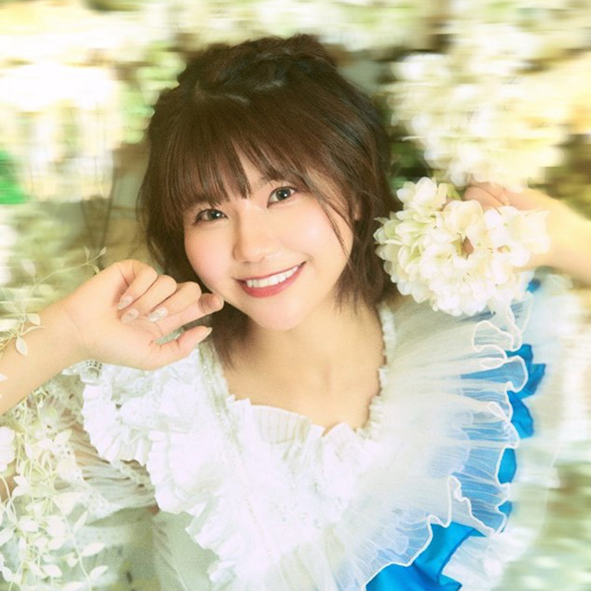

藤田悠也
削除
結芽乃 路上ライブ
削除
Synphony
削除
天野なつ
削除
日本橋イベント
削除

天野なつ
あまの なつ
2018年6月に九州発アイドルグループ「LinQ」（2代目リーダー）卒業後、ソロシンガーとして活動。軽快なシティポップ、パワフルなEDMダンスナンバーからバラードまでジャンルを越えてリリース。ライブ活動を中心とする他、タレントや女優、ラジオパーソナリティーなど様々な分野で活動中。
CheerPointでアイテムを送ろう！
⭐
スター
100cp
💖
ハート
100cp
🎇
花火
400cp
👏
拍手
10cp
🔥
応援
300cp
💬
メッセージ
1000cp
0 ポイント保有
特定商取引法に基づく表記
TOP
SCHEDULE
LIVE
ARTIST
MY PAGE